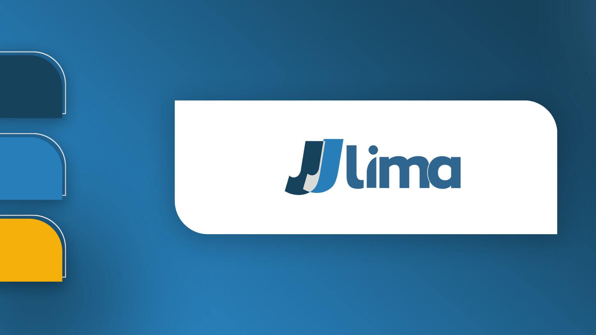

Projeto completo de branding e estrategia digital: do posicionamento ao plano editorial para quatro canais simultaneos.
Visao geral
A JJ Lima chegou sem posicionamento claro, sem identidade visual definida e sem uma estrategia de conteudo para crescer digitalmente. O desafio era transformar um servico tecnicamente forte em uma marca que comunica autoridade, gera confianca e atrai o cliente certo.
Identidade visual
Cores que comunicam solidez e competencia. Tipografia que equilibra autoridade com acessibilidade. Uma identidade que funciona em todos os pontos de contato.
Audiencia
Cada persona tem dores diferentes, usa canais diferentes e precisa de uma comunicacao calibrada. A estrategia leva isso em conta do primeiro ao ultimo contato.
Estrategia de conteudo
Cada pilar resolve um problema de percepca diferente. Juntos, eles criam uma presenca digital que educa, gera confianca e converte.
Presenca digital
Cada plataforma tem dinamicas diferentes. A estrategia foi construida respeitando o comportamento de cada audiencia em cada canal.
Diagnostico
Nenhuma estrategia se sustenta sem diagnostico. A SWOT foi o ponto de partida para identificar onde concentrar energia e como se diferenciar no mercado.
Proximo passo
Identidade visual, estrategia de conteudo e posicionamento — tudo integrado.